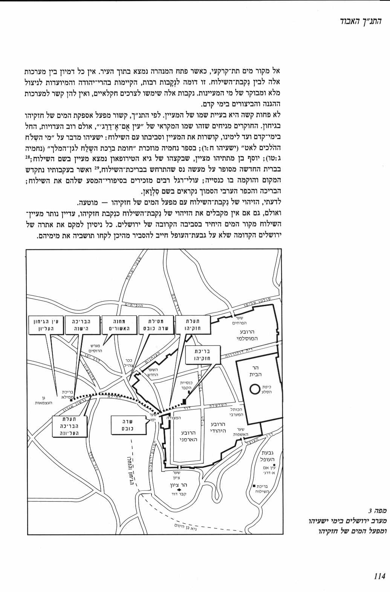

קוד: מסילת שדה כובס - לקראת מלחמה על ירושלים בתנ"ך
סוג: תוכן2
מאת: אראל
אל: האתר
ע"פ הספר 'התנך האבוד' (יהושע עציון), שדה כובס הוא הרחבה שמחוץ לשער יפו.

הוא נקרא כך כי בימי קדם (עד לפני כ53 שנה) עברה בו תעלת מים שהובילה מים מבריכת ממילא (במערב, ליד גן העצמאות, ברחוב אגרון) אל שער יפו, ותושבי העיר נהגו לכבס את בגדיהם במימי התעלה.
שער יפו הוא נקודה חלשה בהגנה על ירושלים: קל יחסית לפרוץ משם לתוך העיר (משאר הכיוונים יש מורדות תלולים). זו הסיבה שבנו לידו את מגדל דוד - לתצפית ולחיזוק ההגנה.
כשצבא מתכונן למלחמה, המלך לא אמור לשבת בארמון, אלא לצאת לגבול. נראה לי שזו הסיבה שאחז יצא למסילת שדה כובס לאחר ששמע על התקרבות הצבא הארמי: הוא רצה לבחון את הנקודה החלשה הזאת, לראות אם צריך לחזק את הביצורים, וחוץ מזה - לדבר עם התצפיתנים במגדל, לקבל מהם דיווח על המצב, ולעודד אותם לקראת המלחמה.
ישעיהו יצא למסילת שדה כובס כדי לפגוש את אחז בדיוק בזמן שהוא מתכונן למלחמה. הסיבה לזה היא פסיכולוגית: קל יותר לאדם לקלוט רעיונות שקשורים לנושא שהוא עכשיו חושב עליו. הזמן הכי טוב לדבר עם אחז על המלחמה הוא כאשר אחז מתכונן למלחמה.